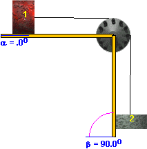
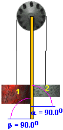
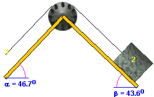

  
It is often very useful when studying a system to look at some
special limiting cases of the system. The illustrations above show
three examples that are limits of the double-incline system.
System (a) is called Fletcher's Trolley. You get it by
setting a = 0 and b = 90o, i.e., the left incline
horizontal and the right incline vertical.
System (b) is called Atwood's machine. It was invented by
Atwood after Newton's death to test Newton's laws of motion. You get
it by setting both a and b equal to 90o, i.e., both inclines vertical.
System (c) is obtained not by taking special values for the
angles, but by setting the mass of block 1 equal to zero.
Effectively, this means eliminating block 1. You just have to imagine
that the string is now wound around the pulley.
All three limiting systems will be described theoretically by the
expresssion for the acceleration that we have derived, if the angles
and masses are given their corresponding values.
When you go on to the last page, you can experiment with the
system once more and test the theory for the special cases illustrated
above. You will also find some questions related to these special
cases under Energy/Conservation/Test Yourself.